01 / Concepts · Fundamentals
Read the chart
Five building blocks, each one used by the next. Swing points define structure, structure sets direction, liquidity sits at the swing points, and order blocks and gaps mark where price is likely to react.
- High
- A green candle followed by a red one. The high is the highest wick of those two candles. Green → Red
- Low
- A red candle followed by a green one. The low is the lowest wick of those two candles. Red → Green
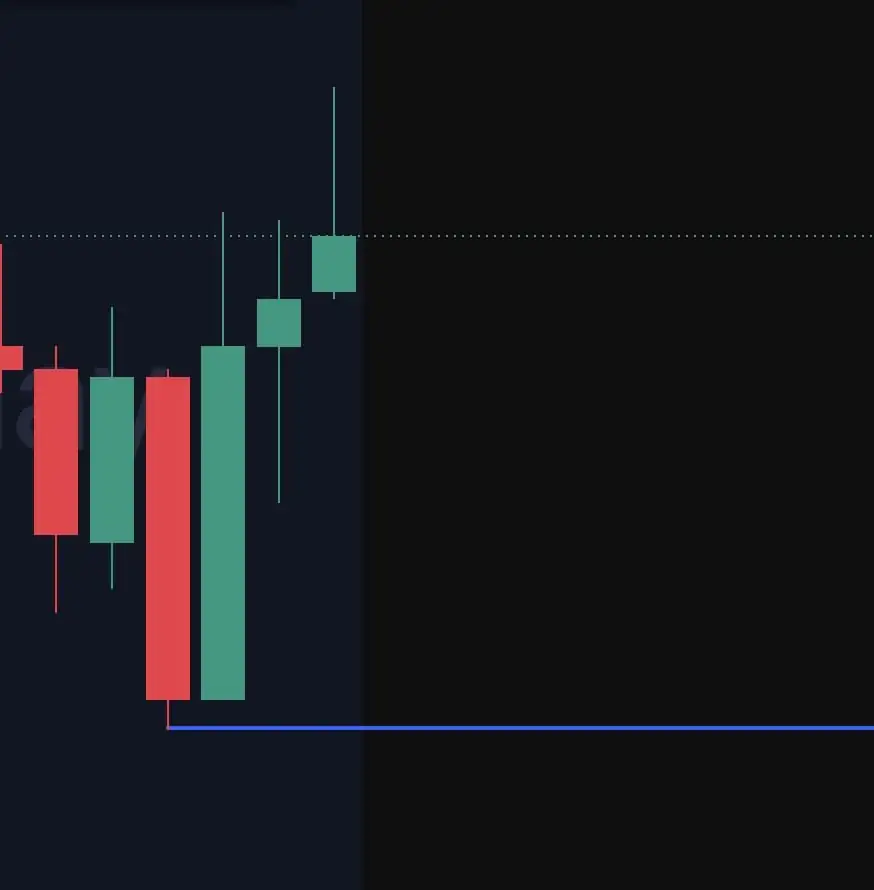
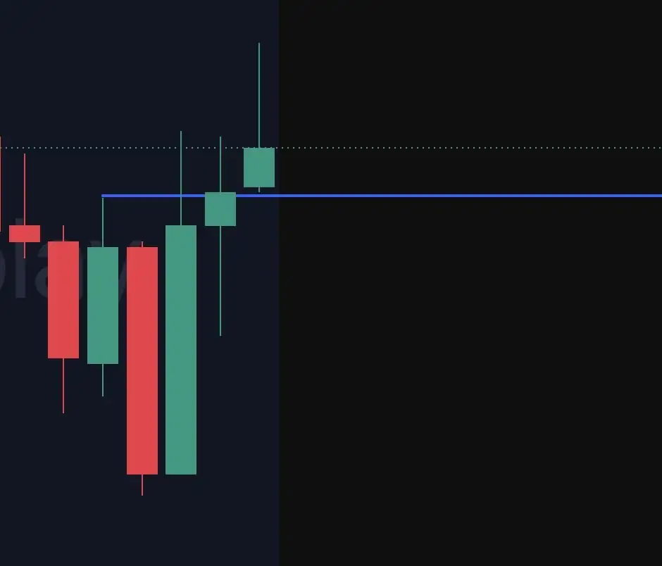
If price is trending up, or has bullish market structure, I look to buy. If it's trending down, I look to sell. Structure is read by comparing each new swing to the one before it.
- HH · Higher high
- Price makes a higher high than the previous high. Bullish
- HL · Higher low
- Price makes a higher low than the previous low. Bullish
- LL · Lower low
- Price makes a lower low than the previous low. Bearish
- LH · Lower high
- Price makes a lower high than the previous high. Bearish
Trends break all the time, especially on lower timeframes. That's why structure is most useful on higher timeframes, as a filter for which trades to take.
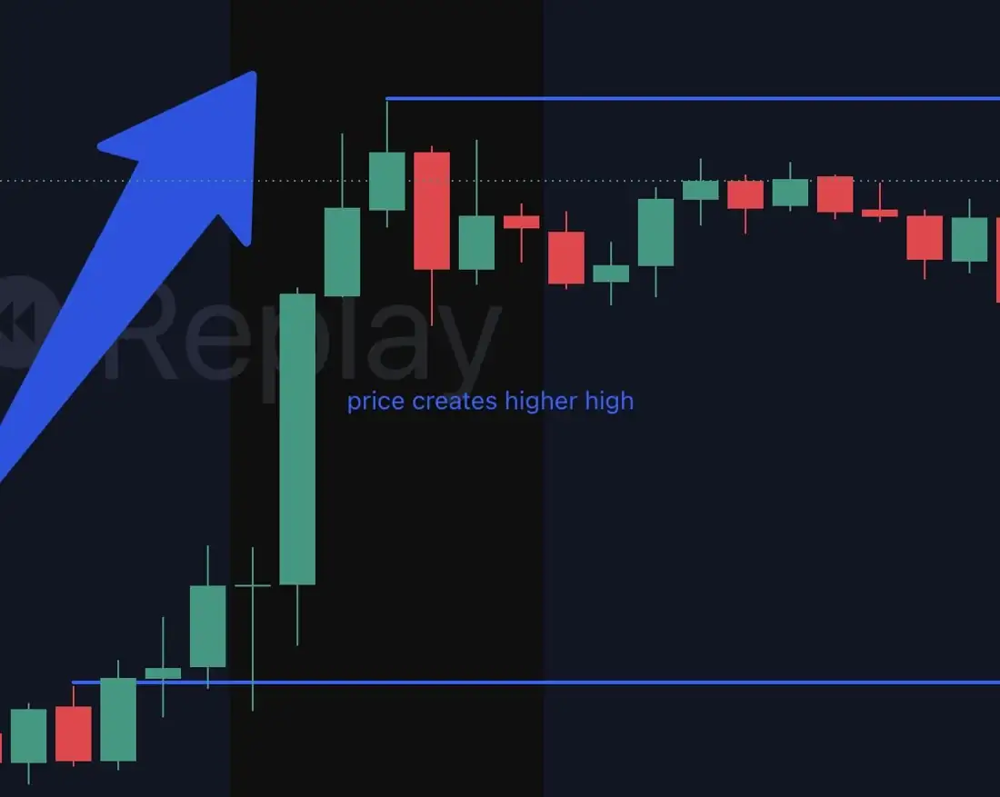
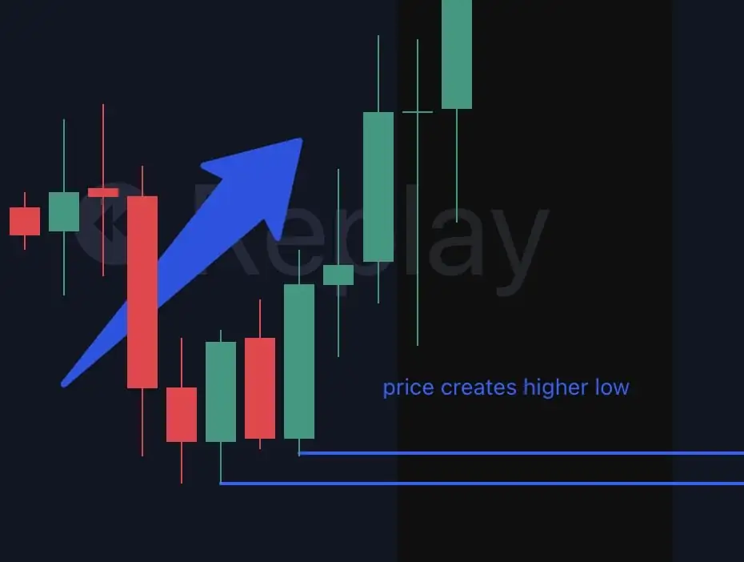
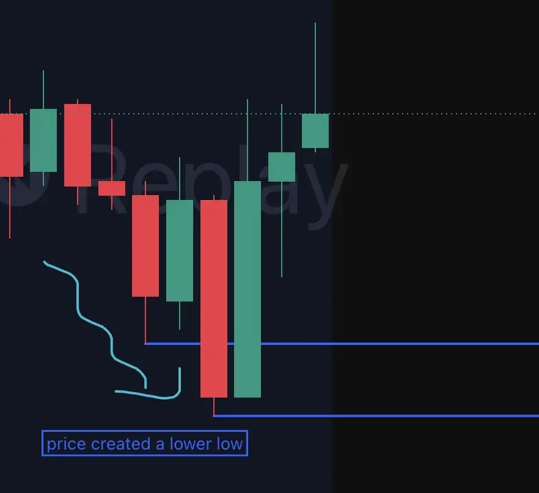
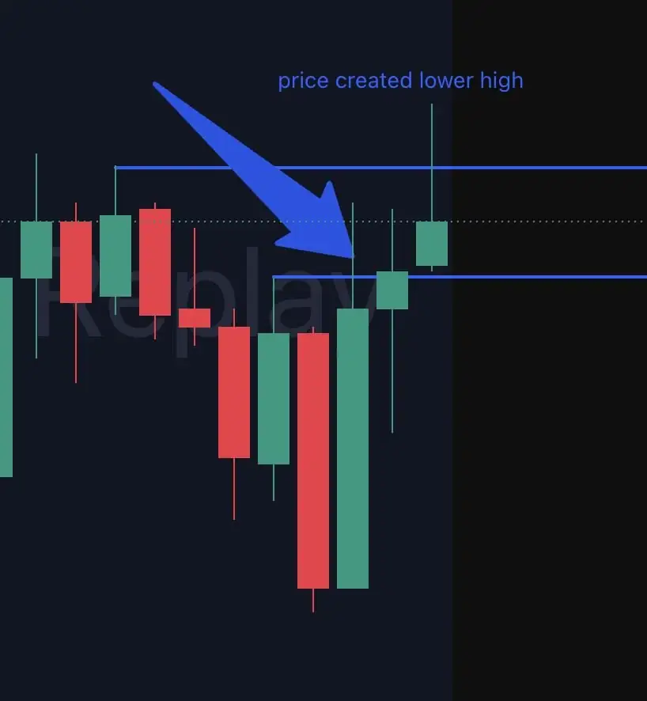
Liquidity is the stop losses and take profits that haven't been hit yet. Where do people put them? At swing highs and swing lows, the pivot areas of the market. Those levels are where price tends to travel.
- Valid swing high
- The candle has the highest wick compared with the 2–3 candles on its left and right. Buy-side liquidity above
- Valid swing low
- The candle has the lowest wick compared with the 2–3 candles on its left and right. Sell-side liquidity below
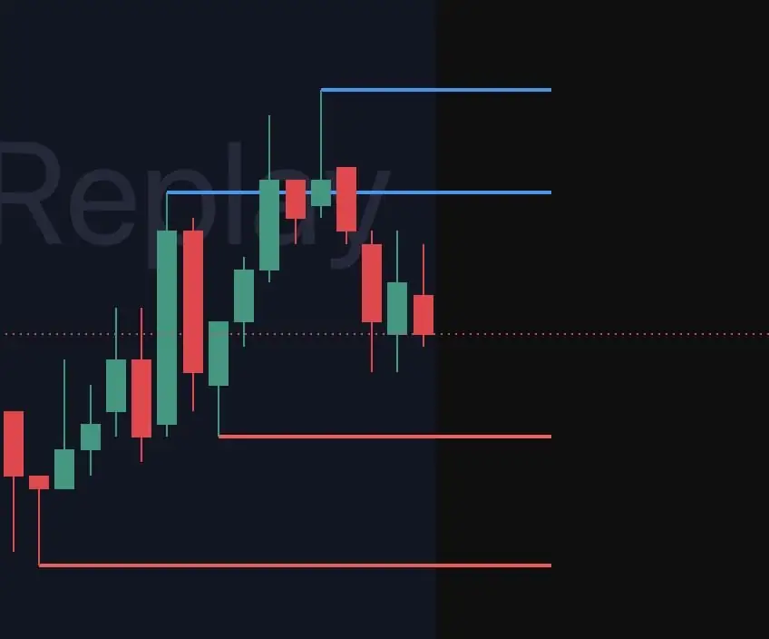
An order block is the area left behind after a sharp move or a liquidity sweep: the zone where institutional traders placed their buy or sell orders. Mark it from the bottom wick to the top wick of the candle.
- Bullish OB
- The last down candle before a liquidity sweep. Look for buys
- Bearish OB
- The last up candle before a liquidity sweep. Look for sells
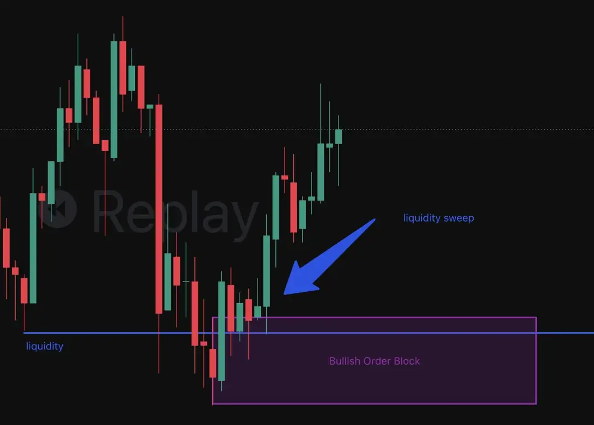
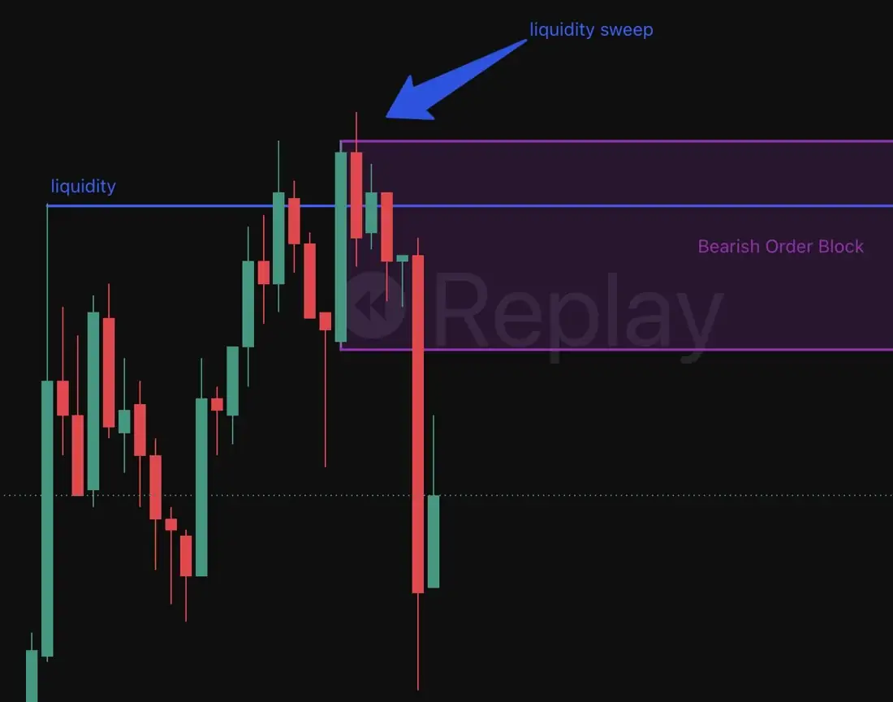
- Fair value gap
- A three-candle pattern where the middle candle isn't overlapped by the wicks of the first or third. It shows an imbalance and a strong move. Price should fill into the gap, then continue in that direction. Imbalance
- Inverse FVG
- Price fills the gap but then crosses straight through it instead of continuing. The gap has been disrespected and flips its meaning. Flipped gap
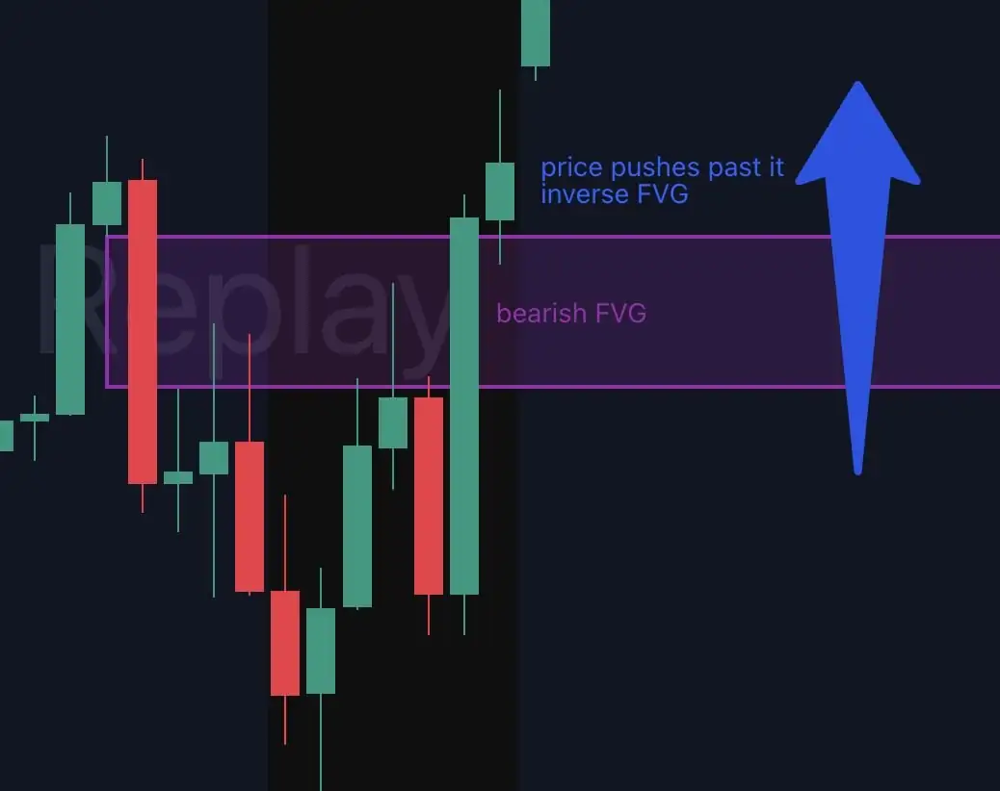
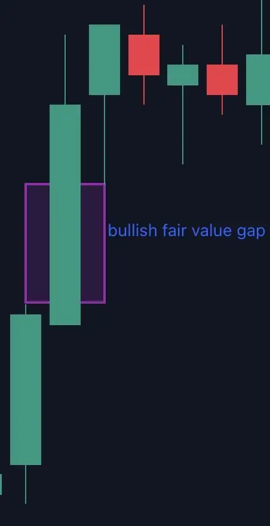